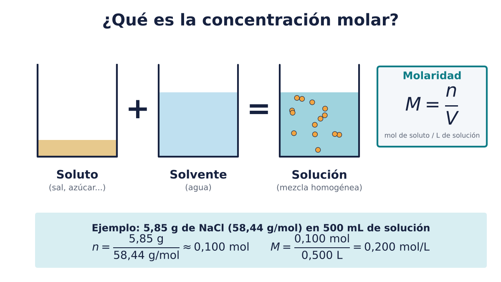

Propósito (4 horas)
En esta fase aprendes a medir, preparar y comparar soluciones. Vas a hacer tres prácticas:
| Práctica | Tema | Herramienta | Tiempo |
|---|---|---|---|
| 1 | Concentración de las soluciones | PhET Concentración y PhET Molaridad | 1 h 30 min |
| 2 | Preparación y dilución de soluciones | Laboratorio Virtual de ChemCollective | 1 h 30 min |
| 3 | Determinación del pH | PhET Escala de pH (y extensión en ChemCollective) | 1 h |
Cada práctica tiene siempre las mismas secciones: objetivo, para entender, conoce la herramienta, predice, actividades, registro de datos, análisis y quiz.
Repaso: ¿qué es una solución?

Una solución es una mezcla homogénea: no se distinguen sus componentes a simple vista. El soluto es lo que se disuelve (sal, azúcar) y el solvente es donde se disuelve (casi siempre agua). Las soluciones están en todas partes: el suero, el agua de mar, una gaseosa, el aire (solución de gases) y hasta el bronce (solución sólida de cobre y estaño).
| Tipo de solución | Característica | Ejemplo |
|---|---|---|
| Diluida | Tiene poco soluto respecto al solvente | Agua del río Sinú |
| Concentrada | Tiene mucho soluto respecto al solvente | Agua de mar, jarabe |
| Saturada | Ya no puede disolver más soluto a esa temperatura; el exceso se deposita | Agua con sal hasta que queda sal en el fondo |
| Sobresaturada | Tiene más soluto del que le correspondería; es inestable | Miel cristalizada, al enfriarse una solución muy azucarada |